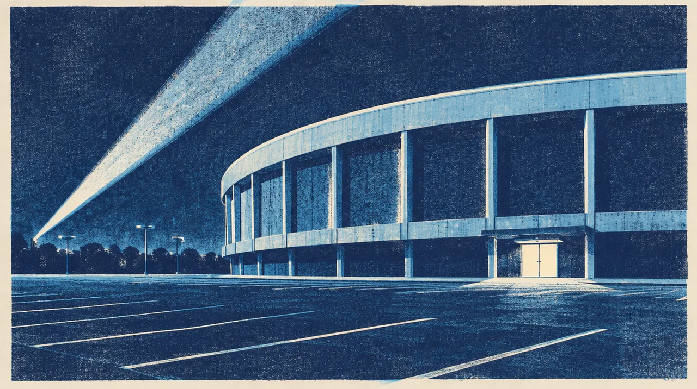

MUSIC · OCT 11 · San Diego
LATENITE
If the night has one more chapter in it.
18 days out
- When
- Sun Oct 11, 2026
- Where
- Pechanga Arena, San Diego
Before we go
Artist recordings open on their own players. Not a promised setlist.

MUSIC · OCT 11 · San Diego
If the night has one more chapter in it.
18 days out
Artist recordings open on their own players. Not a promised setlist.